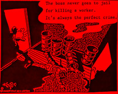

Turnaround in Oil
By Arthur J Miller
Damn fate! What did I ever do to be condemned to such dreadful toil? It is not like the Gods of fate need to further convince me that we exist in the domain of a putrid system of blood sucking parasites. I need no further evidence of the essential need of those in wage bondage to raise up against their masters and cast them off to the fires of hell.
 I pulled on my slicker suit and taped the ends to my boots. Then adjusted my respirator and took one last look at the outside world. Then going in, feet first, through a hole that is only wide enough to fit my shoulders threw. Once my knees passed the opening, I must bend then down as far as they will go. By twisting and turning, I am able to get the rest of my body into the vessel. Once inside, I have one shoulder against the side of the vessel and there is a little over three inches between my other shoulder and the other side of the vessel.
The holewatch passes in my hard hat, which has a face shield attached, and the pressure washing gun. The vessel is around 20 feet tall, and by squirming upwards, and standing on short pieces of angle iron, I am able to get close to the top. Holding the gun above my head and turning my body, I am able to wash away all the chemical residue and rust scaling. As I wash, much of the residue rains down upon me. Once I am able to bring the gun down to my chest, I am able to just turn my body around the vessel to achieve the goal. Then I climb down to the next set of angle iron and repeat the process.
I cannot help wonder why I have found myself in such place? I had worked many years shipyards, but the new globalization has sent most of work overseas. For a while, I drove a long haul truck, but that kept me away from home too much. I did try to just drive locally, but that involved almost continuous shifting caused me pain in one knee which had been injured long ago on a ship.
Since there were so many yardbirds out of work, a government retraining program opened up to us. I took a little time to look into different training opportunities and decided upon environmental technician/industrial health and safety training. I thought I would be doing mostly paper work, things like Environmental Site Assessments, safety programs and so on. I thought I would have an advantage, because I had done so much work in industry that I knew most everything I would see. I worked hard in my class. In the final tests, I came in third in my class, even though I was the only one there who had never been to college.
I applied at every environmental company within 50 miles of where I lived. I first found out that they only wanted much younger techs. And they were not interested in industrial experience, but rather wanted those with the ability to place mounds of meaningless paper upon any given situation. Real environmental protection, industrial health and safety was not the real purpose of this industry. Instead the purpose was to give a false impression of dealing with problems with paper work written by those that don't have a clue and most of the paper work was never applied to reality anyhow.
As it turned out the only useful thing I got out of the training was my 40 Hour HAZWOPER card. This meant I could work within hazardous exclusion zones. All the work I could find was either part time or through contract agencies. The agencies would rent you out to other companies that needed enviro techs. They would have you sign a contract for each job, and in that contract you had to agree not to work for the company you were sent to for six months after that job was over. If that company wanted to hire you before that six months was up, they had to buy your contract from the agency. I have been able to survive by working short pipefitting jobs and when those are not available working out of environmental staffing agencies.
The agency would send you out on all kinds of jobs. Some of those that I have worked are: lead remediation,, emergency spill response, contaminated soil remediation, soil sampling, household hazardous waste, mold remediation, USTs, dismantling hazmat incinerators, and turnarounds (a turnaround is when they shut the place down for maintenance) in saw mills and oil refineries.
So here I was, inside a tight vessel working an oil refinery turnaround. I was almost at the bottom when my holewatch yelled in that I had to get out of the vessel immediately. In an oil refinery you do not question when someone says to vacate your work area. I twisted my way out of the damn thing, then the holewatch told me there was a Hydrogen Sulfide (H2S) leak. H2S is an extremely hazardous substance. When you first smell it, it smells like rotting eggs and then it deadens your sense of smell. It can be deadly if inhaled or absorbed through the skin and it is extremely flammable.
The spill had taken place less than 20 feet away from where we were working, and without questioning anything, we headed up wind. Once we were across a road in a safe area, we started to look around for other workers from our company and gather together. When everyone was accounted for, the talked turn to why there was no siren sounded. Everyone had been told to evacuate by word of mouth. By law when there is a hazmat evacuation in a refinery, there is a loud siren that is sounded so that everyone immediately knows to evacuate. The best guess we had was that the refinery was already behind in the work of the turnaround, and they did not want to alert outside authorities to the leak, which would have meant greater delays. The fact that the whole refinery did not stop working, as it should have done when there is any type of leak, tends to reinforce that view.
The next day at our morning safety meeting, the boss jumped on our case for how we evacuated (going straight up wind from the leak). He told us that when ever there is an evacuation that we were to go straight to our work trailer. Having the biggest mouth on the crew, I spoke up and said; "you mean that you wanted us to go through the contaminated area and then walk down wind of a leak of a deadly subsistence? I don't think so! Look in the regs or any industrial safety manual and you will see that we did what we should have done."
The boss only wanted a place where he could count heads and he was not well educated on industrial safety procedures. He then changed the subject and went on with the safety meeting. But this pointed to a dangerous flaw in the system. The boss ran the morning safety meetings and the safety program, but he did not know his ass from a hole in the ground about industrial safety. And the system did not require that he hire someone who did. This problem became more obvious throughout the turnaround.
One untrained worker mangled his foot, damn near cut the damn thing off, while hydroblasting. Hydroblasting is a means to clean metal in which you use water that is between 10,000 to 20,000 PSI of pressure. There were a number of other injuries, including a number of night shifters with the company I was working for.
On the second day of the job they had me working a vessel that had a strong smell to it. Though they kept on testing it before I had to go into it, I was a bit concerned. They had me working on the outside of it and the chemical was burning my eyes. So I asked them what the chemical was and they said they did not know. I asked five times and asked for the MSDS on the chemical, which by law is my right to see. I wanted to know what the PEL (Permissible Exposure Limit) was so that I could understand their readings. Also, I wanted to make sure that I had the correct PPE (Personal Protective Equipment). Given the fact that it burned my eyes, I was concerned about what it could do to my skin.
Since they would give me no information and they had no chemical suits, which I requested, I was left with a decision. If I complain, went to a state agency or refused to do an unsafe job, that would mean I would get no more work from the agency. Or I could, by own knowledge, put together my own PPE for that work, that I keep in my car. Given the fact that I could not prove my case, the vessel would be cleaned before any state inspector could get there, the bossman would more than likely lie, and I needed the work I got from the agency, I used my own PPE.
They kept on opening up more and more vessels and never telling us what was in them. I did the best that I could to protect myself, hell them damn bosses would not even give us hoods to place over out heads to protect us from all that shit rained down on us. I did get a few skin burns out of one vessel.
The vessels that made, most of us slaves, the most nervous were the narrow very high ones. You climb up 120 feet to the top of a narrow vessel and the damn thing would sway in the wind. I don't normally mind highs, but when you are up that high, and it is swaying, that does give you an uneasy feeling.
In all turnarounds, the work most be done in the time given for the refinery to stay on schedule. We started with 9 1/2 hour days which soon went to 12 hour days, 7 days a week. They were talking about going to 14 hour days, when I got out of that lousy job the old fashion way, I got injured.
We had this one vessel that was wider at the bottom than at the top, which was about 90 feet tall. There was nothing in inside to climb on, so they lowered down a chain ladder from the top. A chain ladder is like a Jacob's ladder but has chain inside of rope. It was not secured at the bottom and since the lower end of the vessel was wider than where the ladder was secured to at the top, it was basically hanging there in midair. And given the fact that such a latter is very flexible, it was hard to climb with all your stuff and even harder to work off of.
The only way I could find to work was to place my shoulders against the wall of the vessel which pushed the ladder out and left my legs pointing out at about a 45% angle. Then I had to hold on to the ladder with one hand and work with my other hand. Well this put a strain on my lower mid back. That pulled some back muscles and knocked my hip out of whack from my spine. So here I am on painkillers, muscle relaxers and going to physical therapy three times a week.
Contract workers are basically temps that have to sign a contract in order to work. They are being used more and more often in industry, because they have no benefits and they have little to no recourse to do anything about the conditions of their work. While it is true, that by law you cannot be fired for demanding that safety laws be followed. But since most all the jobs are short term, if you complain about anything the agencies will not send you out on any more jobs after you finish the job in which you complained about.
As for the unions, first off there are few unions in the environmental industry. I know of only one company that is a union shop. The reason that company has a union is that they are an old company that does other work and got a union a long time ago. When they got into so-called environmental work, the union covered those workers also. Those workers have a piss poor union, we temps make more money than they do. And all I have ever heard from the workers are one complaint after another about their union. The only thing that union does that effects contract workers is that they have a rule that contract workers cannot work longer than 30 days at the company. So when there is work longer than 30 days, one group of contract workers have to be replaced with another group.
The unions don't like contract workers. They view us as an inferior life form. Over the years many of the business unions have developed an elitist image of themselves as being some type of a labor aristocracy. Only the superior workers are allowed to be organized. And since many of the business unions stopped organizing workers, that has left many workers without any union representation. In the skilled trade unions, even if you have learned your trade you may find that the union books are closed to you, some times even when you work a union shop. In that case you are forced to pay an agency fee, but you have no say in the union.
If you belong to some of the trade unions and there is no work in union shops, pure economics may force you to work a nonunion shop. And there are many of those around since the unions will not try to organize them. If a union job opens up and you don't quit the nonunion shop some of the unions will fine you. I have heard of fines as high as $1,000 a day. This really sucks because the nonunion job could mean much longer employment. In some cases this has forced workers to drop out of the union.
The labor movement needs to change. The days of the labor aristocracy must come to an end. We need a labor movement that actively tries to organize all workers, including contract and temp workers. We need a labor movement that actively protects worker's health and safety along with the environment, which we all are dependent upon. The answer to the environmental industry is to organize the companies and get rid of the agencies by having union hiring halls that can supply short term workers when needed. We need union training and certification. We need free universal transfer between local unions and also between locals in different regions, so that we are able to go where the work is without being penalized. And rather than fine union workers when they must work at nonunion shops, these workers should be used as organizers of those shops.
In all my working days, I have only come across one union that had the willingness to be open to the real needs and concerns of all workers. That union is the Industrial Workers of the World (IWW).